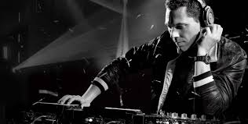

David GuettaEs un musico frances que cuenta con una gran cantidad
de colaboraciones en el ambito musical, en las cuales ha gozado del apoyo
de cantantes como Akon, Ne Yo y Kelly Rowland.
Dj Tiesto Es un dj proveniente de los Países Bajos y reconocido productor musical.
Cuenta con varios remixes que son clasicos dentro del genero y tambien ha colaborado con musicos
famosos como Sarah McLachlan.

Deadmau5Destacado DJ de origen canadiense dentro del electrohouse y el genero de house.
Su peculiar nombre artístico proviene de la peculiar mascara de raton que utiliza en cada una
de sus presentaciones, a la que llama mau5head.